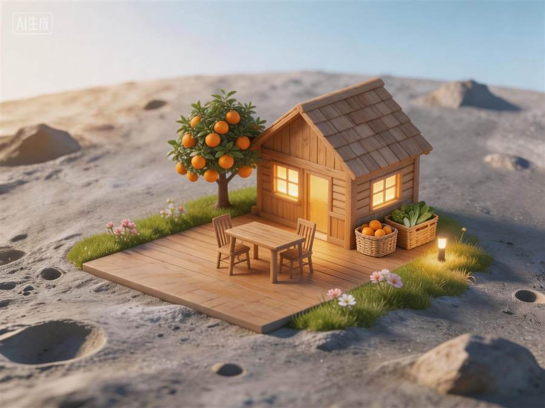
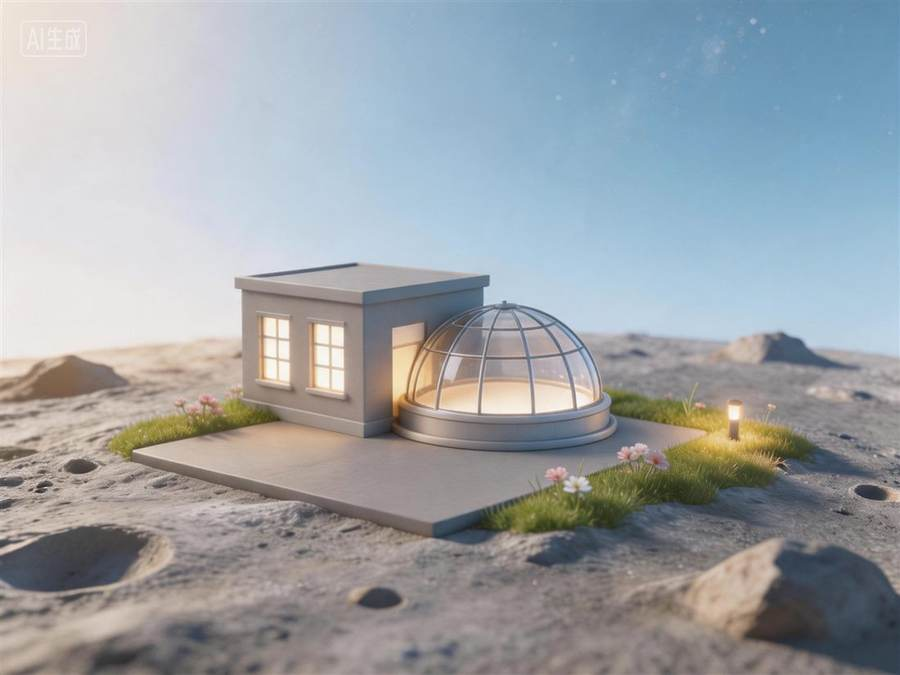
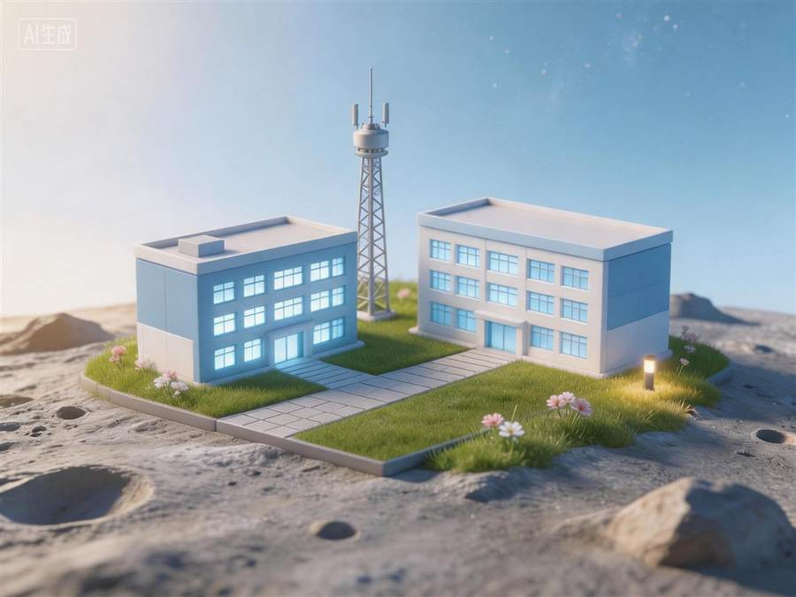

计划中心
创建每日计划，设置维度、目标量、提醒时间和备注

项目围绕「目标设定 → 计划中心 → 专注执行 → 即时奖励 → 生态变化 → 数据复盘」构建完整闭环。 用户先制定计划，到点提醒后进入行动舱专注计时，完成后立即获得星光、宝箱进度和生态区变化。
创建每日计划，设置维度、目标量、提醒时间和备注
进入行动舱全屏沉浸计时，结束后自动结算星光奖励
按计划设定时间推送通知，点击直达行动舱入口
面向学习、工作、运动场景，计时记录与计划自动同步
完成后弹出星光、生态解锁和宝箱进度
连续打卡沉淀为成就徽章墙
点击进入六个生态区查看成长
热力图、趋势曲线、连续天数统计与导出
制定计划后进入行动舱，全屏沉浸计时。计时期间屏蔽干扰，结束后自动结算星光并同步计划完成度。让每一次专注都有起止、有成果。
创建每日计划，设置维度、目标量和提醒时间。完成后自动归档并计入星球成长，未完成的计划次日提醒，形成完整执行链路。
每个计划独立设置提醒时间，到点微信推送通知，点击直达行动舱。连续打卡天数实时显示在首页，断签清零，激励持续坚持。
六类日常行动对应六个独特生态区。运动会修复绿洲，学习会点亮天文台，计划会让灯塔持续发光。






星光值、连续天数、六维完成度和行动舱记录共同推动星球进化。每个阶段都会呈现不同的视觉状态和生态解锁。
行动舱和计划完成后，反馈采用「星光结算 + 生态变化 + 宝箱进度 + 成就提示」组合，让用户不用滑动页面也能立刻知道自己获得了什么。
使用 WXML、WXSS、JavaScript 和微信云开发完成数据同步、云函数、云存储与本地缓存，兼顾演示完整度和真实可用性。
扫描小程序码体验完整流程：命名星球、制定计划、设置提醒、进入行动舱专注计时、完成打卡、领取奖励、查看生态区和数据复盘。
 微信扫码体验
星途自律舱 · 星球养成式自律打卡
微信扫码体验
星途自律舱 · 星球养成式自律打卡